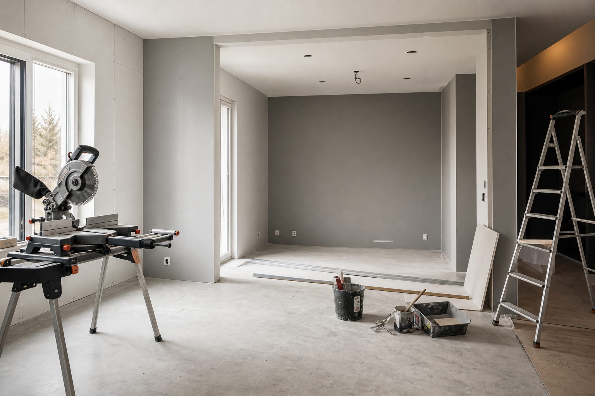
Sisäremontit
Sisäremontti asuntoihin, taloihin ja yksittäisiin tiloihin: purkutyöt, rungot, kipsilevytyöt, eristys, tasoitus, maalaustyöt, lattiat ja viimeistely.
Rakentaminen + järjestys + tulos
Sisä- ja ulkotyöt, kokonaisremontit, saunat, lattiat, seinät, julkisivut ja erilaiset rakennustehtävät — huolellisesti, selkeästi ja vastuullisesti.

AKTiiV24 tekee rakennus- ja remonttitöitä selkeällä toimintatavalla: sovitut työt, siisti toteutus ja valmis lopputulos ilman turhaa säätöä. Palvelemme yksityisasiakkaita, taloyhtiöitä, yrityksiä ja urakoitsijoita eri puolilla Suomea.
Yritys
AKTiiV24 tekee rakennus- ja remonttitöitä yksityisasiakkaille, taloyhtiöille, yrityksille ja urakoitsijoille. Työskentelemme sisätilojen, julkisivujen, saunojen, lattioiden, seinien, ovien, ikkunoiden ja muiden rakennustehtävien parissa.
Toimintatapamme on selkeä: ensin ymmärrämme tehtävän, sitten ehdotamme toimivan ratkaisun, teemme työn huolellisesti ja viemme kohteen valmiiksi.
Arvostamme järjestystä, selkeitä sopimuksia ja asiakkaan kohteen kunnioittamista. Hyvä remontti tarkoittaa meille sekä hyvää lopputulosta että rauhallista työprosessia.
Toimimme Uudellamaalla ja tarvittaessa muualla Suomessa: Helsinki, Espoo, Vantaa, Nurmijärvi, Tuusula, Kerava, Järvenpää ja lähialueet.
Palvelut
Teemme laajan valikoiman rakennus- ja remonttitöitä purkutöistä viimeistelyyn.

Sisäremontti asuntoihin, taloihin ja yksittäisiin tiloihin: purkutyöt, rungot, kipsilevytyöt, eristys, tasoitus, maalaustyöt, lattiat ja viimeistely.
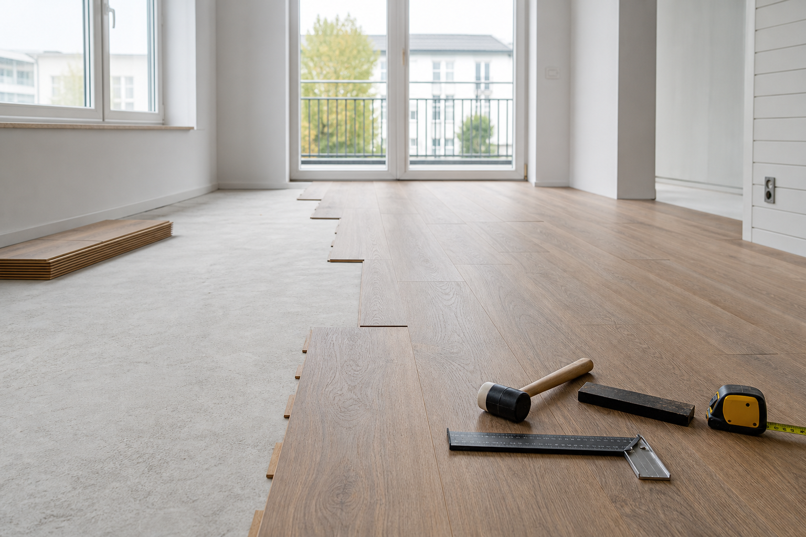
Purkutyöt vanhoille pinnoille, väliseinille, lattioille, katoille, oville, listoille, laatoille ja muille rakenteille siististi ja hallitusti.
Kipsilevytyöt, runkojen, väliseinien ja kotelointien asennus, aukkojen vahvistus sekä seinien valmistelu tasoitusta ja maalausta varten.
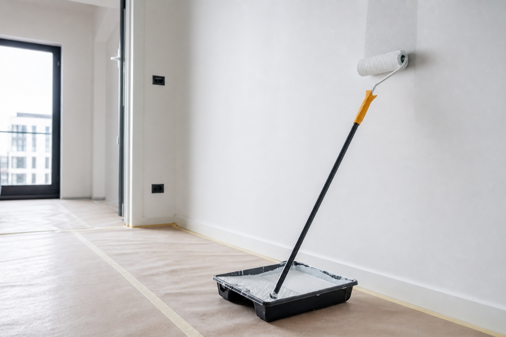
Maalaustyöt, pintojen tasoitus, hionta, pohjustus sekä seinien ja kattojen viimeistely. Siisti lopputulos alkaa oikeasta pohjatyöstä.
Lattian asennus: laminaatti, vinyyli, parketti, vaneri, alusmateriaalit, listat ja alustan valmistelu kohteen vaatimusten mukaan.
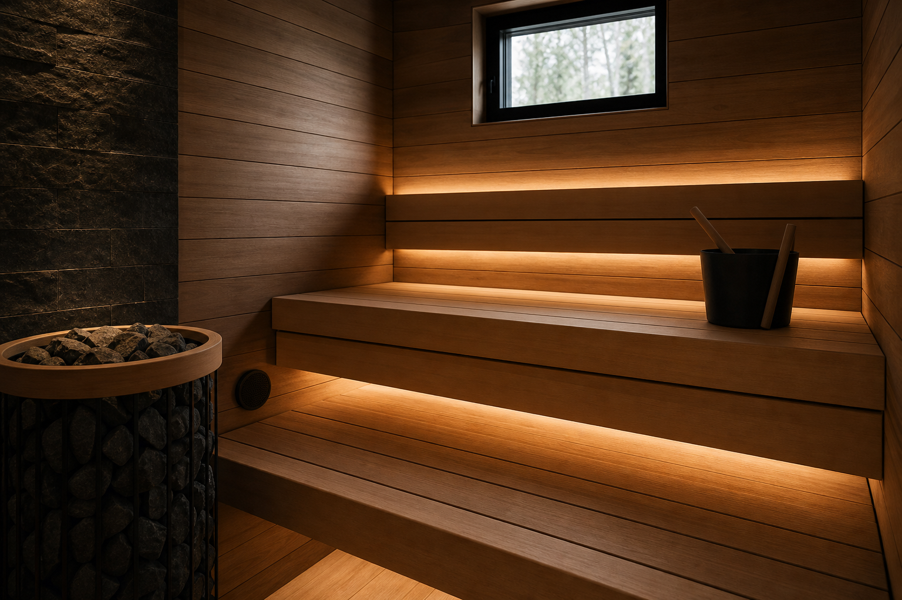
Saunaremontti, saunojen rakentaminen ja uudistaminen: paneelit, lauteet, katot, valaistus, viimeistely ja huolellinen asennus.
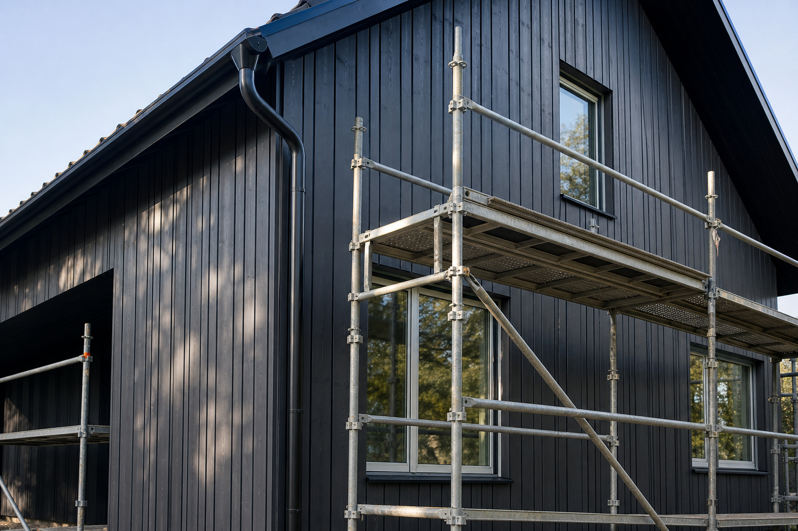
Julkisivutyöt, ulkoverhouksen vaihto, maalaus, puupintojen valmistelu ja talojen ulkoviimeistely sovitun laajuuden mukaan.
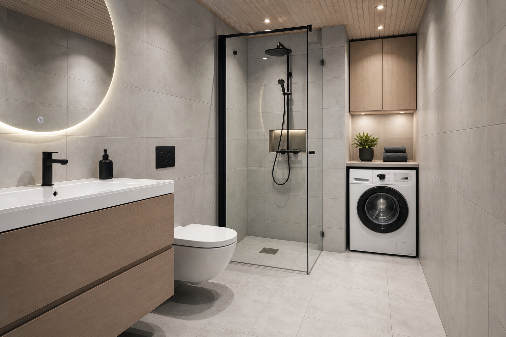
Valmistelu- ja viimeistelytyöt märkätiloissa materiaalien, alustojen ja käytön vaatimukset huomioiden. Erikoisvaiheet tekee alan ammattilainen.
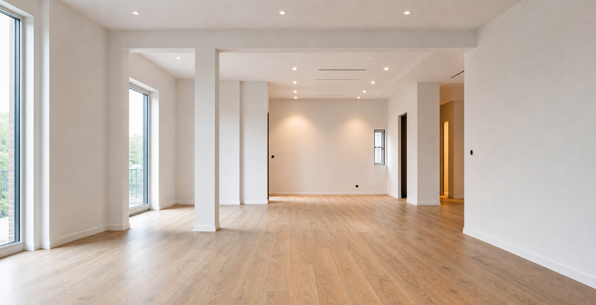
Ovien ja ikkunoiden asennus, pielien, listojen ja pienten valmistelutöiden toteutus seuraavia rakennusvaiheita varten.
Miksi AKTiiV24
Työ järjestetään niin, ettei seuraava vaihe ala epäselvyyksien korjaamisella.
Muoto, aikataulu, työmäärä ja materiaalit käydään läpi ennen työn alkua.
Teemme erilaisia tehtäviä yksittäisestä työvaiheesta laajempaan remonttiin.
Voimme liittyä projektiin tekijänä tai lisäresurssina.
Portfolio
Alla olevat kuvat havainnollistavat palvelualueita ja työn lopputuloksen tyyliä. Toteutuneita kohdekuvia lisätään asiakkaiden luvalla.
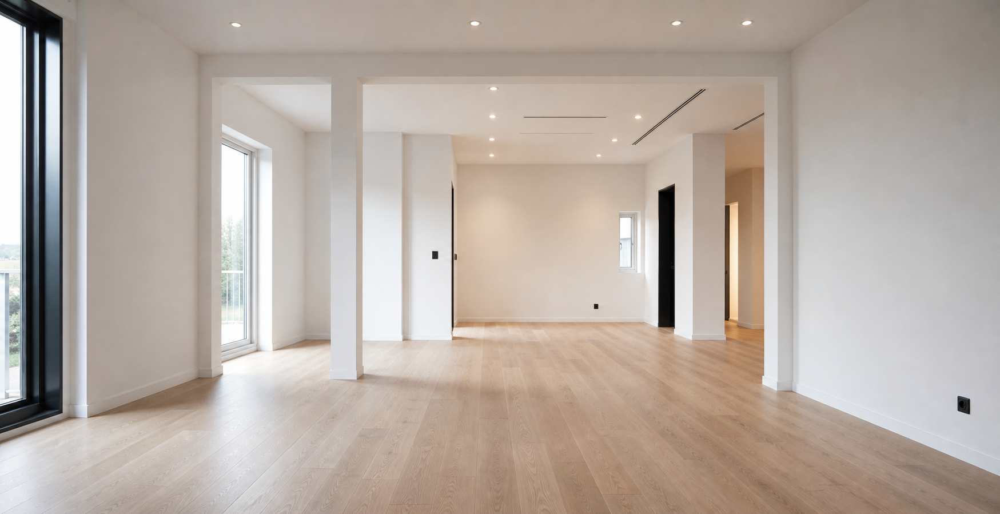
Asuntoremontti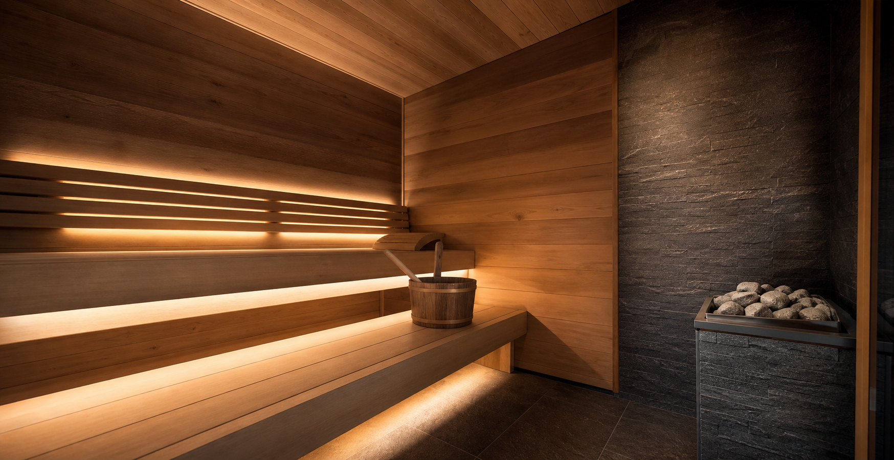
Saunan uudistus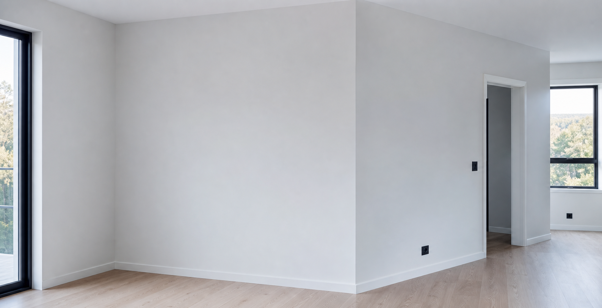
Seinien maalaus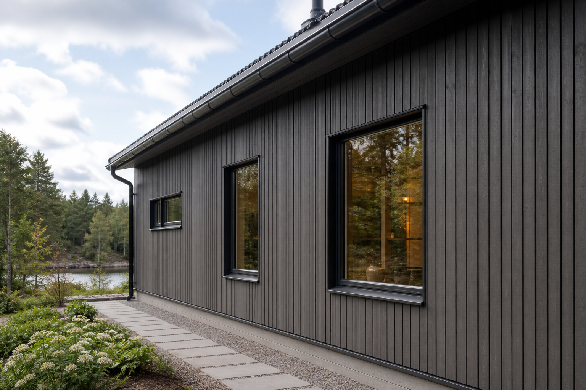
Talon julkisivuProsessi
Lähetät kuvauksen, osoitteen, aikataulun ja valokuvat.
Selvitämme työmäärän, materiaalit, pääsyn kohteeseen ja odotukset.
Teemme alustavan arvion aikataulusta ja kustannuksista.
Sovimme työn muodosta ja seuraavasta vaiheesta.
Työskentelemme sovitun suunnitelman mukaan.
Tarkistamme lopputuloksen ja luovutamme kohteen.
B2B
AKTiiV24 voi tehdä yksittäisiä rakennus- ja remonttivaiheita yrityksille, urakoitsijoille ja kiinteistöjen omistajille. Voimme liittyä projektiin tietyn työmäärän tekijänä tai lisäresurssina kohteessa.
Tiimi
Jos sinulla on kokemusta, työkalut, vastuullinen asenne ja halu tehdä laadukasta työtä, lähetä tietosi.
Arviot
Keräämme vähitellen asiakasarvioita ja esimerkkejä tehdyistä töistä, jotta uudet asiakkaat voivat arvioida toimintatapamme paremmin.
FAQ
Emme. Voimme tehdä yksittäisen työvaiheen tai laajemman remontin. Kaikki riippuu tehtävästä, aikataulusta ja saatavuudesta.
Kyllä. Kuvat auttavat ymmärtämään työmäärää nopeammin ja antamaan alustavan vastauksen.
Kyllä. Työskentelemme yksityisasiakkaiden, yritysten, urakoitsijoiden ja kiinteistöjen omistajien kanssa.
Kyllä. Voit tilata esimerkiksi lattiat, maalauksen, purun, ovet, saunan, julkisivun tai muun erillisen vaiheen.
Materiaalien hankintatapa sovitaan erikseen. Vaihtoehtoja on useita kohteesta ja sopimuksesta riippuen.
Pääasiallinen työalue on Suomi. Tarkka kohde ja mahdollinen siirtyminen sovitaan erikseen.
Tarjouspyyntö
Nopeaa arviota varten lähetä meille kohteen osoite tai kaupunki, lyhyt kuvaus tarvittavasta työstä, muutama kuva nykytilanteesta, toivottu aikataulu sekä tieto siitä, onko materiaalit jo hankittu vai tarvitaanko apua niiden valinnassa.
Yhteystiedot
Kuvaile työ, liitä mukaan kuvia kohteesta ja kerro toivottu aikataulu. AKTiiV24 ilmoittaa avoimesti yhteys- ja rekisteritiedot, jotta asiakkaalle on selvää, kenen kanssa hän asioi.